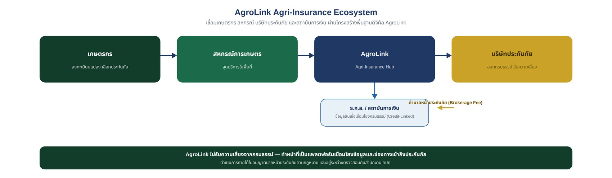

เชื่อมโยงเกษตรกร สหกรณ์ บริษัทประกันภัย สถาบันการเงิน และผู้รับซื้อสินค้าเกษตร ด้วยข้อมูลแปลงเพาะปลูก ดาวเทียม AI และข้อมูลการผลิตจริง
เอกสารแนวคิดเชิงยุทธศาสตร์ | ตุลาคม 2569 — บริษัท ภักดี คอร์ปอเรชั่น จำกัด (AgroLink)

หมายเหตุเกี่ยวกับขอบเขต: เอกสารนี้เป็นข้อเสนอเชิงแนวคิดสำหรับการพัฒนาบริการประกันภัยบน AgroLink Platform เท่านั้น ไม่ใช่เอกสารยืนยันความร่วมมือกับบริษัทประกันภัย สมาคม หรือหน่วยงานใดที่กล่าวถึง และไม่ใช่การรับรองว่า AgroLink ได้รับใบอนุญาตประกอบธุรกิจนายหน้าประกันภัยแล้ว การดำเนินการจริงต้องผ่านการตรวจสอบและขออนุญาตจากสำนักงานคณะกรรมการกำกับและส่งเสริมการประกอบธุรกิจประกันภัย (คปภ.) ก่อนเริ่มดำเนินการ
AgroLink ควรพัฒนาบริการประกันภัยให้เป็นหนึ่งในบริการหลักของแพลตฟอร์ม โดยทำหน้าที่เป็น Digital Insurance Infrastructure สำหรับภาคเกษตร เชื่อมโยงเกษตรกรกับบริษัทประกันภัยผ่านสหกรณ์การเกษตร ใช้ข้อมูลแปลงเพาะปลูก ดาวเทียม AI กิจกรรมการผลิต และข้อมูลทางการเงิน เพื่อช่วยให้เกษตรกรเข้าถึงประกันภัยได้สะดวกขึ้น ลดความเสี่ยงของผู้ให้สินเชื่อ และเพิ่มความมั่นคงให้กับห่วงโซ่คุณค่าการเกษตร
ข้อเสนอคือให้เริ่มจากประกันภัยพืชผล โดยเฉพาะข้าว แล้วขยายไปสู่ข้าวโพด มันสำปะหลัง ปศุสัตว์ ประมง และเครื่องจักรกลการเกษตรในระยะถัดไป
หัวใจสำคัญคือ AgroLink ไม่ต้องเป็นบริษัทรับประกันภัยและไม่ต้องรับความเสี่ยงจากการจ่ายค่าสินไหมเอง แต่ทำหน้าที่พัฒนาระบบดิจิทัล เชื่อมโยงข้อมูล จัดหาช่องทางเข้าถึงผลิตภัณฑ์ประกันภัย และดำเนินการในฐานะนายหน้าประกันภัยที่เก็บค่าบริการจากบริษัทผู้รับประกันภัย โดยแบ่งรายได้ส่วนหนึ่งให้สหกรณ์การเกษตรที่เป็นช่องทางให้บริการในพื้นที่
ข้อเสนอคือให้วางตำแหน่งบริการเป็น AgroLink Agri-Insurance & Risk Management Platform ประกอบด้วยบริการ 6 ส่วน ดังตาราง
| บริการ | รายละเอียด | คุณค่าที่ได้รับ |
|---|---|---|
| 1. Digital Insurance Marketplace | รวมผลิตภัณฑ์ประกันภัยจากหลายบริษัท | เกษตรกรเลือกประกันได้ตามความต้องการ |
| 2. Satellite Risk Assessment | วิเคราะห์ความเสี่ยงจากดาวเทียมและข้อมูลสภาพอากาศ | สนับสนุนการประเมินความเสี่ยงรายแปลง |
| 3. Smart Insurance Enrollment | สมัครประกันผ่านสหกรณ์และระบบดิจิทัล | ลดขั้นตอนการสมัครและการจัดเก็บเอกสาร |
| 4. Digital Claim Management | แจ้งเหตุ ติดตามสถานะ และจัดเก็บหลักฐานความเสียหาย | เพิ่มความสะดวกในการเรียกร้องสินไหม |
| 5. Agri-Credit Protection | เชื่อมโยงประกันภัยกับสินเชื่อเกษตร | ลดความเสี่ยงของเกษตรกรและผู้ให้สินเชื่อ |
| 6. Climate & Carbon Risk | เชื่อมโยงข้อมูลภูมิอากาศ การผลิต และโครงการคาร์บอน | สนับสนุนการบริหารความเสี่ยงระยะยาว |
ข้อควรระวัง: ระบบดาวเทียมและ AI เป็นเครื่องมือสนับสนุนการประเมินความเสี่ยงและตรวจสอบความเสียหาย ไม่ได้หมายความว่าจะใช้แทนหลักเกณฑ์การรับประกันภัยหรือการพิจารณาสินไหมตามกรมธรรม์ได้ทั้งหมด
ข้อเสนอคือให้แบ่งผลิตภัณฑ์เป็น 3 ระยะ โดยเลือกผลิตภัณฑ์ที่มีตลาดและพันธมิตรพร้อมก่อน แล้วจึงพัฒนาผลิตภัณฑ์ใหม่ร่วมกับบริษัทประกันภัย
| ผลิตภัณฑ์ | ความคุ้มครองที่ต้องการ | แนวทางดำเนินการ |
|---|---|---|
| ประกันภัยข้าวนาปี | ภัยธรรมชาติตามเงื่อนไขกรมธรรม์ | เชื่อมต่อผลิตภัณฑ์ที่มีอยู่ |
| ประกันภัยข้าวโพดเลี้ยงสัตว์ | ความเสียหายจากภัยที่กำหนดไว้ | เชื่อมต่อผลิตภัณฑ์ที่มีอยู่ |
| ประกันภัยมันสำปะหลัง | ความเสียหายจากภัยที่ระบุในกรมธรรม์ | ศึกษาและพัฒนาผลิตภัณฑ์ร่วมกับพันธมิตร |
| ประกันภัยข้าวแบบดัชนี | จ่ายสินไหมเมื่อดัชนีที่กำหนดเข้าเงื่อนไข | ทดลองร่วมกับบริษัทประกันภัย |
| ประกันภัยผลผลิตรายแปลง | คุ้มครองความเสียหายตามเงื่อนไขที่กำหนด | ศึกษาความเป็นไปได้ในระยะถัดไป |
ข้อเสนอ: อย่าเริ่มด้วยการสร้างกรมธรรม์ใหม่ทั้งหมด ควรเริ่มจากการนำผลิตภัณฑ์ที่มีอยู่แล้วเข้าสู่ AgroLink ก่อน แล้วจึงใช้ข้อมูลจริงเพื่อพัฒนาประกันภัยรูปแบบใหม่ เหตุผลคือประเทศไทยมีระบบประกันภัยข้าวนาปีและข้าวโพดเลี้ยงสัตว์อยู่แล้ว โดยมีทั้งภาครัฐ สมาคมประกันวินาศภัยไทย และบริษัทประกันภัยที่เกี่ยวข้อง จึงมีโครงสร้างเดิมให้ AgroLink เข้าไปเชื่อมต่อได้
เชื่อมโยงสินเชื่อกับการประกันภัยตลอดวงจรการผลิต ตัวอย่างการดำเนินงาน:
ข้อดีคือเกษตรกรสามารถเข้าถึงสินเชื่อและประกันภัยได้ในกระบวนการเดียวกัน โดยไม่จำเป็นต้องเดินทางติดต่อหลายแห่ง อย่างไรก็ตาม ประกันภัยไม่ใช่การรับประกันว่าจะได้รับสินเชื่อ และการมีกรมธรรม์ไม่ได้ทำให้ผู้ให้สินเชื่อต้องอนุมัติสินเชื่อโดยอัตโนมัติ
เชื่อมโยงประกันภัยกับผู้ให้สินเชื่อหลายประเภท ได้แก่ ธ.ก.ส. สหกรณ์การเกษตรที่ให้สินเชื่อ ธนาคารพาณิชย์ ผู้ให้บริการสินเชื่อเกษตรที่ได้รับอนุญาต และบริษัทลีสซิ่งเครื่องจักรกลการเกษตร
| ประเภทสินเชื่อ | ผลิตภัณฑ์ประกันภัยที่ควรพิจารณา |
|---|---|
| สินเชื่อปลูกข้าว | ประกันภัยข้าว |
| สินเชื่อปลูกข้าวโพด | ประกันภัยข้าวโพด |
| สินเชื่อซื้อรถแทรกเตอร์ | ประกันภัยเครื่องจักรและความรับผิดต่อบุคคลภายนอกตามความเหมาะสม |
| สินเชื่อซื้อโดรนเกษตร | ประกันภัยโดรนและความรับผิด |
| สินเชื่อเลี้ยงโค | ประกันภัยปศุสัตว์ |
| สินเชื่อเพาะเลี้ยงสัตว์น้ำ | ประกันภัยสัตว์น้ำ หากมีผลิตภัณฑ์ที่รองรับ |
แนวคิดสำคัญคือการเชื่อมโยงสินเชื่อกับประกันภัยโดยไม่จำกัดให้เกษตรกรต้องซื้อประกันจากบริษัทเดียว และต้องเปิดเผยเงื่อนไขให้ชัดเจน
พัฒนาเป็นบริการที่ใช้ข้อมูลการเกษตรจริงเพื่อสนับสนุนการประเมินความเสี่ยง องค์ประกอบหลัก ได้แก่
แนวทางนี้มีตัวอย่างการดำเนินงานในประเทศไทยแล้ว โดยกรมส่งเสริมการเกษตร สมาคมประกันวินาศภัยไทย และไทยคมเคยร่วมมือกันนำข้อมูลดาวเทียม Data Analytics และ AI/ML มาใช้สนับสนุนการประกันภัยพืชผล ดังนั้น AgroLink ควรวางตัวเป็นแพลตฟอร์มเชื่อมโยงข้อมูลและขยายบริการสู่เครือข่ายสหกรณ์ มากกว่าพัฒนาระบบประเมินความเสียหายซ้ำซ้อนกับระบบที่มีอยู่แล้ว
ข้อเสนอคือให้แบ่งพันธมิตรเป็น 4 กลุ่ม ได้แก่ สมาคมและหน่วยงานกำกับ สถาบันการเงิน บริษัทประกันภัย และหน่วยงานรัฐ/พันธมิตรเทคโนโลยี
สมาคมฯ เป็นพันธมิตรที่ควรเข้าพบเป็นลำดับต้น ๆ เพราะมีบทบาทในโครงการประกันภัยพืชผลของประเทศไทยอยู่แล้ว ข้อเสนอความร่วมมือคือจัดทำแนวคิดโครงการ AgroLink Digital Agricultural Insurance Pilot เพื่อหารือความเป็นไปได้ในการเชื่อมโยงแพลตฟอร์มกับบริษัทประกันภัยหลายราย ทั้งนี้ การเข้าร่วมโครงการหรือการรับรองจากสมาคมฯ ต้องได้รับความเห็นชอบจากสมาคมฯ ก่อน ไม่ควรถือว่าเป็นพันธมิตรที่ตกลงเข้าร่วมแล้ว
ธ.ก.ส. มีผลิตภัณฑ์ประกันภัยที่เกี่ยวข้องกับภาคเกษตรรวมถึงประกันภัยปศุสัตว์บางประเภทอยู่แล้ว จึงเป็นช่องทางสำคัญที่ควรศึกษาเพื่อเชื่อมโยงกับ AgroLink ข้อเสนอเชิงธุรกิจคือ AgroLink ไม่ควรนำเสนอเพียงระบบขายประกันภัย แต่ควรนำเสนอการลดความเสี่ยงตลอดวงจรสินเชื่อ ตั้งแต่ก่อนเพาะปลูก ระหว่างเพาะปลูก จนถึงการจำหน่ายผลผลิต
ควรเริ่มจากบริษัทที่มีประสบการณ์ด้านประกันภัยพืชผล และเปิดรับความร่วมมือด้านเทคโนโลยี บริษัทที่ควรเชิญเข้าหารือ ได้แก่
| บริษัท | เหตุผลที่ควรเชิญหารือ | บทบาทที่เสนอ |
|---|---|---|
| กรุงเทพประกันภัย | มีรายชื่ออยู่ในกลุ่มบริษัทที่เคยเข้าร่วมโครงการประกันภัยข้าวนาปี | หารือการเชื่อมต่อผลิตภัณฑ์ประกันภัย |
| เออร์โกประกันภัย | มีประสบการณ์จากการเข้าร่วมโครงการประกันภัยพืชผล | หารือผลิตภัณฑ์และกระบวนการรับประกัน |
| แอกซ่าประกันภัย | มีรายชื่ออยู่ในกลุ่มบริษัทที่เคยเข้าร่วมโครงการดังกล่าว | หารือความร่วมมือด้านประกันภัยและเทคโนโลยี |
บริษัททั้งสามมีรายชื่อในข้อมูลโครงการประกันภัยข้าวนาปีของสมาคมประกันวินาศภัยไทย แต่การมีรายชื่อในโครงการเดิมไม่ได้ยืนยันว่าบริษัทจะเข้าร่วม AgroLink หรือยังมีผลิตภัณฑ์และเงื่อนไขเดิมในปี 2569 จึงต้องตรวจสอบความพร้อมและข้อเสนอปัจจุบันก่อน
ไม่จำเป็นต้องเลือกบริษัทเดียวตั้งแต่ต้น ควรเชิญ 3-5 บริษัทเข้าหารือ และใช้เกณฑ์ดังต่อไปนี้
แนวทางที่แนะนำ: ให้บริษัทประกันภัยเป็นผู้รับความเสี่ยงและรับผิดชอบกรมธรรม์ ส่วน AgroLink เป็นผู้ให้บริการแพลตฟอร์มและโครงสร้างพื้นฐานข้อมูล
สศก. มีความสำคัญต่อการพัฒนาระบบประกันภัยการเกษตรระดับประเทศ โดยภาครัฐได้กำหนดบทบาทในการขับเคลื่อนนโยบายประกันภัยการเกษตรไว้แล้ว
การเข้าถึงข้อมูลต้องเป็นไปตามสิทธิการใช้งานและข้อตกลงกับหน่วยงานที่เกี่ยวข้อง
ไทยคมมีประสบการณ์ความร่วมมือด้านข้อมูลดาวเทียมเพื่อสนับสนุนการประกันภัยพืชผลกับหน่วยงานภาครัฐและสมาคมประกันวินาศภัยไทยมาก่อน จึงเป็นผู้ที่ควรเชิญมาหารือ อย่างไรก็ตาม ไม่จำเป็นต้องใช้ข้อมูลจากผู้ให้บริการรายเดียว AgroLink ควรออกแบบระบบให้รองรับข้อมูลจากดาวเทียมหลายแหล่งตามต้นทุนและความเหมาะสม
ข้อเสนอคือให้เพิ่มโมดูล Insurance เข้าไปในสถาปัตยกรรม AgroLink เดิม โดยไม่แยกระบบออกไปสร้างแพลตฟอร์มใหม่ ระบบวางเป็นชั้น (layer) ดังนี้: AgroLink Platform เชื่อมกับ AgroLink Agri-Insurance Hub ซึ่งประกอบด้วย 3 กลุ่มโมดูล — Insurance Marketplace, Risk Analytics (ดาวเทียม + AI) และ Claims Management — ทั้งหมดดึงข้อมูลจากชั้น AgroLink Agricultural Data (ข้อมูลเกษตรกรและแปลง กิจกรรมการผลิต ข้อมูลภูมิอากาศและดาวเทียม) แล้วเชื่อมต่อออกไปยังพันธมิตรภายนอกผ่าน Partner Integration API ซึ่งเชื่อมกับบริษัทประกันภัย สหกรณ์ และสถาบันการเงิน
| โมดูล | หน้าที่ | ความสำคัญ |
|---|---|---|
| Insurance Product Catalog | แสดงผลิตภัณฑ์และเงื่อนไข | สูง |
| Insurance Quotation | ขอใบเสนอราคาและเปรียบเทียบเบี้ย | สูง |
| Digital Enrollment | สมัครประกันและเก็บหลักฐานความยินยอม | สูง |
| Policy Management | เชื่อมโยงข้อมูลกรมธรรม์ | สูง |
| Satellite Risk Engine | วิเคราะห์ความเสี่ยงรายแปลง | สูง |
| Claim Notification | แจ้งเหตุและส่งหลักฐาน | สูง |
| Claim Tracking | ติดตามสถานะการพิจารณาสินไหม | สูง |
| Cooperative Dashboard | บริหารสมาชิกและกรมธรรม์ | สูง |
| Lender Integration | เชื่อมโยงข้อมูลกับผู้ให้สินเชื่อ | ระยะที่ 2 |
| Insurance Analytics | วิเคราะห์ความเสี่ยงและผลการดำเนินงาน | ระยะที่ 2 |
AgroLink ควรมีระบบเชื่อมต่อกับบริษัทประกันภัยหลายแห่ง เพื่อไม่ให้แพลตฟอร์มผูกขาดกับผู้ให้บริการรายเดียว บริษัทประกันภัยแต่ละแห่งอาจใช้ระบบภายในต่างกัน จึงควรพัฒนา API Gateway และรูปแบบข้อมูลมาตรฐานสำหรับข้อมูลกรมธรรม์ เบี้ยประกัน ความคุ้มครอง และสถานะสินไหม
ข้อมูลการเกษตรและข้อมูลกรมธรรม์ต้องแยกสิทธิการเข้าถึงอย่างชัดเจน พร้อมมีบันทึกการใช้งาน การรักษาความปลอดภัย และกระบวนการจัดการข้อมูลส่วนบุคคลตามกฎหมาย PDPA
ข้อเสนอที่ปรับปรุงคือให้ AgroLink ดำเนินการในฐานะนายหน้าประกันภัย (Insurance Broker) เก็บค่าบริการนายหน้าประกันภัย (Brokerage Fee) จากบริษัทผู้รับประกันภัยตามอัตราที่ตกลงในสัญญา เมื่อเกษตรกรสมัครกรมธรรม์ผ่านแพลตฟอร์ม โดย AgroLink จะแบ่งรายได้ส่วนหนึ่งให้สหกรณ์การเกษตรที่เป็นช่องทางให้บริการและดูแลสมาชิกในพื้นที่ เพื่อสร้างแรงจูงใจให้สหกรณ์มีส่วนร่วมในการดูแลสมาชิกและกระบวนการสมัครประกันภัยอย่างต่อเนื่อง รายละเอียดสัดส่วนการแบ่งรายได้อยู่ระหว่างพิจารณาและจะกำหนดเป็นการภายใน
ข้อควรระวังด้านกฎหมาย: การดำเนินการในฐานะนายหน้าประกันภัยและการรับค่าตอบแทนจากการเสนอขาย ชักชวน หรือจัดจำหน่ายประกันภัย ต้องมีใบอนุญาตนายหน้าประกันภัยตามกฎหมายว่าด้วยการประกันวินาศภัย การแบ่งรายได้ให้สหกรณ์ก็ต้องเป็นไปตามหลักเกณฑ์ที่กฎหมายอนุญาต เช่น สหกรณ์อาจต้องขึ้นทะเบียนเป็นนายหน้าประกันภัยร่วมหรือตัวแทน หรือได้รับค่าตอบแทนในรูปแบบอื่นที่สอดคล้องกับกฎหมาย AgroLink จึงควรให้ที่ปรึกษากฎหมายและสำนักงาน คปภ. ตรวจสอบโครงสร้างธุรกิจและรูปแบบการแบ่งรายได้นี้ให้ชัดเจนก่อนเริ่มดำเนินการจริง
สมมติเบี้ยประกันเฉลี่ย 1,000 บาทต่อกรมธรรม์ และอัตราค่านายหน้าประกันภัยเฉลี่ย 15% ของเบี้ยประกัน (ตัวเลขสมมติเพื่อประกอบการวางแผน อัตราจริงต้องกำหนดตามข้อตกลงกับบริษัทประกันภัยแต่ละรายและเป็นไปตามเกณฑ์ที่กฎหมายอนุญาต) จะได้ค่านายหน้ารวมประมาณ 150 บาทต่อกรมธรรม์
| จำนวนกรมธรรม์ | ค่านายหน้ารวม |
|---|---|
| 1,000 กรมธรรม์ | 150,000 บาท |
| 10,000 กรมธรรม์ | 1,500,000 บาท |
| 50,000 กรมธรรม์ | 7,500,000 บาท |
ตัวเลขนี้เป็นตัวอย่างสมมติสำหรับวางแผนธุรกิจ ไม่ใช่ราคาตลาดหรือรายได้ที่รับประกันว่าจะเกิดขึ้น และยังไม่รวมค่าพัฒนาระบบ ค่าบริการวิเคราะห์ข้อมูล และค่าใช้จ่ายในการดำเนินงาน อัตราค่านายหน้าจริงอาจแตกต่างกันตามประเภทผลิตภัณฑ์และข้อตกลงกับแต่ละบริษัทประกันภัย ตัวเลขดังกล่าวเป็นยอดรวมก่อนการแบ่งรายได้ให้สหกรณ์การเกษตร
นอกเหนือจากค่านายหน้าประกันภัย AgroLink อาจพิจารณารายได้เสริมจากค่าบริการระบบ SaaS สำหรับสหกรณ์ ค่าพัฒนาและเชื่อมต่อ API กับบริษัทประกันภัย และค่าบริการวิเคราะห์ข้อมูลความเสี่ยงให้กับบริษัทประกันภัยหรือองค์กรที่ต้องการ ซึ่งสามารถออกแบบเป็นสัญญาบริการเทคโนโลยีที่ชัดเจน แยกจากรายได้ค่านายหน้าประกันภัย
ข้อเสนอคือให้เริ่มจาก 10 สหกรณ์การเกษตร และเกษตรกรปลูกข้าวประมาณ 1,000 ราย โดยเลือกพื้นที่ที่มีข้อมูลแปลงเพาะปลูกค่อนข้างพร้อม และมีบริษัทประกันภัยที่ยินดีร่วมพัฒนากระบวนการ
| ระยะเวลา | กิจกรรม | ผลลัพธ์ |
|---|---|---|
| เดือน 1-2 | ตรวจสอบโครงสร้างธุรกิจกับที่ปรึกษากฎหมายและสำนักงาน คปภ. พร้อมหารือสมาคมประกันวินาศภัยไทย ธ.ก.ส. และบริษัทประกันภัย | ยืนยันโครงสร้างนายหน้าประกันภัยที่ถูกต้องตามกฎหมาย ได้พันธมิตรที่สนใจและขอบเขตโครงการ |
| เดือน 3-4 | สำรวจผลิตภัณฑ์ประกันภัยและกระบวนการทำงาน | ได้ข้อกำหนดระบบและแบบจำลองธุรกิจ |
| เดือน 5-6 | พัฒนา Insurance Marketplace และ API ขั้นต้น | ระบบต้นแบบพร้อมทดสอบ |
| เดือน 7-8 | เชื่อมโยงข้อมูลสหกรณ์และข้อมูลแปลง | ทดลองลงทะเบียนและแสดงผลิตภัณฑ์ |
| เดือน 9-10 | ทดลองแจ้งเหตุและติดตามสถานะสินไหม | ได้กระบวนการทำงานจริงสำหรับประเมินผล |
| เดือน 11-12 | ประเมินผลและปรับปรุง | ได้รายงานผลและแผนขยายบริการ |
ควรกำหนดตัวชี้วัดเรื่องการจ่ายสินไหมและระยะเวลาการพิจารณาสินไหมร่วมกับบริษัทประกันภัย โดยแยกเวลาที่ AgroLink ควบคุมได้ออกจากเวลาพิจารณาของบริษัทประกันภัย
จุดแข็งของ AgroLink คือการเชื่อมโยงบริการตลอดวงจรการผลิต ไม่ใช่เพียงการขายประกันภัย ตัวอย่างระบบข้าวครบวงจรแบ่งเป็น 4 ขั้นตอน
การเชื่อมโยงข้อมูลเหล่านี้อาจช่วยให้บริษัทประกันภัยประเมินความเสี่ยงได้ละเอียดขึ้น และช่วยให้ผู้ให้สินเชื่อมีข้อมูลประกอบการตัดสินใจมากขึ้น แต่ผลลัพธ์ดังกล่าวต้องผ่านการทดสอบจากข้อมูลจริงก่อนนำไปใช้กำหนดเบี้ยประกันหรือวงเงินสินเชื่อ
ลำดับการดำเนินงานที่แนะนำ โดยเพิ่มการตรวจสอบโครงสร้างธุรกิจกับที่ปรึกษากฎหมายเป็นลำดับแรกสุด เนื่องจากโมเดลรายได้ที่ปรับปรุงใหม่อิงกับสถานะนายหน้าประกันภัยโดยตรง
| องค์ประกอบ | ผู้รับผิดชอบหลัก | รายได้หรือประโยชน์ |
|---|---|---|
| Digital Platform | AgroLink | ค่าบริการนายหน้าประกันภัย |
| Insurance Products | บริษัทประกันภัย | เบี้ยประกันภัยตามกรมธรรม์ |
| Farmer Distribution | สหกรณ์การเกษตร | ส่วนแบ่งค่านายหน้าประกันภัยและการขยายการเข้าถึงเกษตรกร |
| Credit Integration | ธ.ก.ส. และผู้ให้สินเชื่อ | สนับสนุนการบริหารความเสี่ยงสินเชื่อ |
| Satellite Analytics | AgroLink และพันธมิตรข้อมูล | ค่าบริการวิเคราะห์ข้อมูล (รายได้เสริม) |
| Claims Assessment | บริษัทประกันภัยและผู้เกี่ยวข้อง | การตรวจสอบและพิจารณาสินไหม |
ข้อเสนอที่สำคัญคือไม่ควรให้ AgroLink เป็นผู้รับความเสี่ยงจากกรมธรรม์ แต่ควรเป็นโครงสร้างพื้นฐานดิจิทัลที่ทำให้บริษัทประกันภัยสามารถเข้าถึงเกษตรกรและข้อมูลการผลิตได้อย่างมีประสิทธิภาพ โดยมีรายได้หลักจากค่านายหน้าประกันภัยที่แบ่งปันอย่างเป็นธรรมกับสหกรณ์ผู้เป็นช่องทางให้บริการ
ข้อเสนอคือให้ AgroLink ใช้แนวทาง Insurance-as-a-Service for Agriculture โดยเชื่อมโยงประกันภัยเข้ากับ 4 ระบบหลัก ได้แก่ Cooperative OS ที่ใช้สหกรณ์เป็นช่องทางเข้าถึงเกษตรกร Agri Credit & Multi-Lender ที่เชื่อมโยงประกันภัยกับสินเชื่อเกษตร AI & Satellite ที่สนับสนุนการประเมินความเสี่ยงและตรวจสอบความเสียหาย และ Marketplace & Value Chain ที่เชื่อมโยงการผลิต การประกันภัย และการจำหน่ายผลผลิต โมเดลนี้ทำให้ AgroLink มีโอกาสสร้างรายได้จากค่านายหน้าประกันภัยและบริการเทคโนโลยี โดยไม่ต้องลงทุนรับความเสี่ยงด้านการประกันภัยเอง และยังสร้างแรงจูงใจให้สหกรณ์ร่วมขับเคลื่อนบริการผ่านส่วนแบ่งรายได้ที่เหมาะสม
ข้อเสนอที่ควรดำเนินการเป็นลำดับแรก คือจัดทำโครงการ "AgroLink Digital Agricultural Insurance Pilot" ระยะเวลา 12 เดือน ร่วมกับสมาคมประกันวินาศภัยไทย ธ.ก.ส. บริษัทประกันภัย และสหกรณ์การเกษตร 10 แห่ง เพื่อทดสอบระบบประกันภัยข้าวที่เชื่อมโยงข้อมูลแปลงเพาะปลูก ดาวเทียม สินเชื่อ และกระบวนการเรียกร้องสินไหม โดยต้องผ่านการตรวจสอบโครงสร้างธุรกิจนายหน้าประกันภัยกับที่ปรึกษากฎหมายและสำนักงาน คปภ. ก่อนเริ่มดำเนินการจริง หากโครงการนำร่องประสบความสำเร็จ AgroLink จะสามารถขยายไปยังข้าวโพด มันสำปะหลัง ปศุสัตว์ และประมง พร้อมสร้างบริการประกันภัยที่เชื่อมโยงกับระบบนิเวศการเกษตรครบวงจรได้ในระยะต่อไป
ไม่ว่าจะในฐานะบริษัทประกันภัย สถาบันการเงิน สหกรณ์การเกษตร หรือหน่วยงานภาครัฐ ติดต่อทีมงาน AgroLink เพื่อขอข้อมูลเพิ่มเติมได้ทันที
ติดต่อทีมงาน AgroLink กลับหน้าแรก